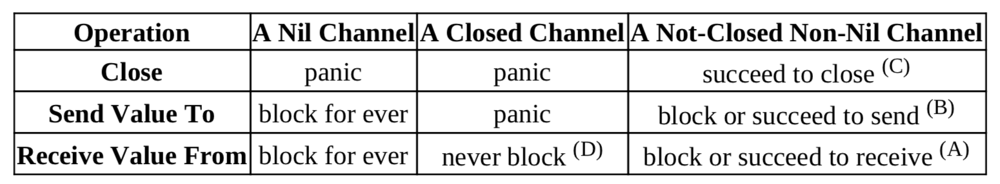

21. Channels - The Go Way to do concurrency synchronizations¶
Don’t (let computations) communicate by sharing memroy, (let them) share memory by communicating (through channels).
五种操作(all these operations are already synchronized)：
- close(ch), ch must not be a receive-only channel.
ch <- v, send a value<-ch, receive a value from the channel- cap(ch), value buffer capacity, return int
- len(ch), query current number of values in the value buffer
We can think of each channel as maintaining 3 queues: - the receiving goroutine queue - the sending goroutine queue - the value buffer queue

// unbufferd demo
package main
import (
"fmt"
"time"
)
func main() {
c := make(chan int)
go func(ch chan<- int, x int) {
time.Sleep(time.Second)
ch <- x * x //block until the result is received.
}(c, 3)
done := make(chan struct{})
go func(ch <-chan int) {
n := <-ch //block until 9 is sent
fmt.Println(n)
time.Sleep(time.Second)
done <- struct{}{}
}(c)
<-done //block until a value is sent to done
fmt.Println("bye")
}
// buffered channel
package main
import (
"fmt"
"time"
)
// A never ending football game
func main() {
var ball = make(chan string)
kickBall := func(playerName string) {
for {
fmt.Println(<-ball, "kicked the ball.")
time.Sleep(time.Second)
ball <- playerName
}
}
go kickBall("John")
go kickBall("Alice")
go kickBall("Bob")
go kickBall("Emily")
ball <- "referee" //kick off 开球
var c chan bool //nil
<-c // blocking here forever
}
- Channel Element Values are Transferred by Copy。If the passed value size too large, use a pointer element type instead.
- A goroutine can be garbage collected when it has already exited.
- Channel send and receive operations are simple statements.
empty select-case code block select{} will make current goroutine stay in blocking state forever.
22 Methods in Go¶
Should a method be declared with pointer receiver or value receiver ?
- Too many pointer copies my cause heavier workload for garbage collector
- if value receiver type is Large , should use pointer receiver.
- declaring methods of both value receivers ans pointer receivers for the same base type is more likely to cause data races if the declared methods are called concurrently in multiple goroutines.
- values of the types in sync standard package should not be copied.
If it is hard to make a decision , just choose the pointer receiver way.
23 Interfaces in Go¶
type assert and type switch
- Values of []t can’t be directly converted to []I, even if type T implements interface type I.
- Each method specified in a interface type corresponds to an implicit function.
37 Channel Use Cases¶
Use channels as Futures/Promises¶
Return receive-only channels as results¶
package main
import (
"fmt"
"math/rand"
"time"
)
func longTimeRequest() <-chan int32 {
r := make(chan int32)
go func() {
// simulate a workload
time.Sleep(time.Second * 3)
r <- rand.Int31n(100)
}()
return r
}
func sumSquares(a, b int32) int32 {
return a*a + b*b
}
func main() {
rand.Seed(time.Now().UnixNano())
a, b := longTimeRequest(), longTimeRequest()
fmt.Println(sumSquares(<-a, <-b)) // 3s 返回, a,b 并发执行的
}
Pass send-only channels as arguments¶
package main
import (
"fmt"
"math/rand"
"time"
)
func longTiemRequest(r chan<- int32) {
// simulate a worklaod
time.Sleep(time.Second * 3)
r <- rand.Int31n(100)
}
func sumSquares(a, b int32) int32 {
return a*a + b*b
}
func main() {
rand.Seed(time.Now().UnixNano())
ra, rb := make(chan int32), make(chan int32)
go longTiemRequest(ra)
go longTiemRequest(rb)
fmt.Println(sumSquares(<-ra, <-rb))
}
The first response wins¶
package main
import (
"fmt"
"math/rand"
"time"
)
func source(c chan<- int32) {
ra, rb := rand.Int31(), rand.Intn(3)+1
time.Sleep(time.Duration(rb) * time.Second)
c <- ra
}
func main() {
rand.Seed(time.Now().UnixNano())
beg := time.Now()
c := make(chan int32, 5) // must bufferd channel
for i := 0; i < cap(c); i++ {
go source(c)
}
// only frist resposne will be used
rnd := <-c
fmt.Println(time.Since(beg))
fmt.Println(rnd)
}
Use Channels for Notifications¶
Use blank struct{} as element types of the notification channels, size of type struct{} is zero, doesn’t consume memory.
1-To-1 notification by sending a value to a channel¶
package main
import (
"fmt"
"math/rand"
"os"
"sort"
)
func main() {
values := make([]byte, 32*1024*1024)
if _, err := rand.Read(values); err != nil {
fmt.Println(err)
os.Exit(1)
}
done := make(chan struct{})
go func() {
sort.Slice(values, func(i, j int) bool {
return values[i] < values[j]
})
// notify sorting is done
done <- struct{}{}
}()
// do some other things
fmt.Println("other thing")
fmt.Println(values[0], values[len(values)-1])
}
1-To-1 notification by receiving a value from a channel¶
package main
import (
"fmt"
"time"
)
func main() {
done := make(chan struct{})
go func() {
fmt.Print("hello")
time.Sleep(time.Second * 2)
<-done
}()
// blocked here, wait for a notification
done <- struct{}{}
fmt.Println(" world")
}
slowers notify the faster waiting for notifications.
N-to-1 and 1-to-N notifications¶
package main
import (
"log"
"time"
)
// T type
type T = struct{}
func worker(id int, ready <-chan T, done chan<- T) {
<-ready // block here and wait a notification
log.Print("Worker#", id, " starts.")
// simulate a workload
time.Sleep(time.Second * time.Duration(id+1))
log.Print("Worker#", id, " job done.")
// notify main goroutine (n-to-1)
done <- T{}
}
func main() {
log.SetFlags(0)
ready, done := make(chan T), make(chan T)
go worker(0, ready, done)
go worker(1, ready, done)
go worker(2, ready, done)
// simulate an initialization phase
time.Sleep(time.Second * 3 / 2)
// 1-to-n notifications
ready <- T{}
ready <- T{}
ready <- T{}
// Being N-to-1 notified
<-done
<-done
<-done
}
更常见的使用 sync.WaitGroup 做 N-to-1，通过 close channels 实现 1-to-N.
Broadcast (1-To-N) notifications by closing a channel¶
上例中的三个发送 ready 可以直接换成一个 close(ready)
Timer: scheduled notification¶
package main
import (
"fmt"
"time"
)
func AfterDuration(d time.Duration) <-chan struct{} {
c := make(chan struct{}, 1)
go func() {
time.Sleep(d)
c <- struct{}{}
}()
return c
}
func main() {
fmt.Println("hi")
<-AfterDuration(time.Second)
fmt.Println("Hello!")
<-AfterDuration(time.Second)
fmt.Println("bye")
}
实际中使用 time.After
Use Channels as Mutex Locks¶
two manners to use one-capacity bufferd channels as mutex locks.
- Lock through a send, unlock through a receive
- Lock through a receive, unlock through a send
// lock through send
package main
import "fmt"
func main() {
mutex := make(chan struct{}, 1) // capacity must be one
counter := 0
increase := func() {
mutex <- struct{}{} // lock
counter++
<-mutex // unlock
}
const n = 1000
increase1000 := func(done chan<- struct{}) {
for i := 0; i < n; i++ {
increase()
}
done <- struct{}{}
}
done := make(chan struct{})
go increase1000(done)
go increase1000(done)
<-done
<-done
fmt.Println(counter) //2000
}
Use Channels as Counting Semaphores¶
Buffered channels can be used as counting semaphores. Counting semaphores can be viewed a multi-owner locks, can have most N owners at any time.
- Acquire ownership through a send, release through a receive
- Acquire ownership through a receive, release through a send
// acquire-through-receiving.go
package main
import (
"log"
"math/rand"
"time"
)
type Seat int
type Bar chan Seat
func (bar Bar) ServeCustomer(c int) {
log.Print("costomer#", c, " enters the bar")
seat := <-bar // need a seat to drink
log.Print("++ customer#", c, " drinks at seat#", seat)
time.Sleep(time.Second * time.Duration(2+rand.Intn(6)))
log.Print("-- customer#", c, " free seat#", seat)
bar <- seat // free seat and leave the bar
}
func main() {
rand.Seed(time.Now().UnixNano())
bar24x7 := make(Bar, 10) // bar24x7 has 10 seat
for seatId := 0; seatId < cap(bar24x7); seatId++ {
// None of the sends will blocks
bar24x7 <- Seat(seatId)
}
for customerId := 0; ; customerId++ {
time.Sleep(time.Second)
go bar24x7.ServeCustomer(customerId)
}
// sleeping != blocking
for {
time.Sleep(time.Second)
}
}
// channeltest/go101/acquire-through-sending.go
package main
import (
"log"
"math/rand"
"time"
)
type Customer struct{ id int }
type Bar chan Customer
func (bar Bar) ServeCustomer(c Customer) {
log.Print("++ customer#", c.id, " staring drinking")
time.Sleep(time.Second * time.Duration(3+rand.Intn(16)))
log.Print("-- customer#", c, " leaves the bar")
<-bar // leaves the bar and save a space
}
func main() {
rand.Seed(time.Now().UnixNano())
bar24x7 := make(Bar, 10) // bar24x7 has 10 seat
for customerId := 0; ; customerId++ {
time.Sleep(time.Second * 2)
customer := Customer{customerId}
bar24x7 <- customer
go bar24x7.ServeCustomer(customer)
}
for {
time.Sleep(time.Second)
}
}
Dialogue(Ping-Pong)¶
// channeltest/go101/two-goroutines-dialogue-through-channel.go
package main
import (
"fmt"
"os"
"time"
)
type Ball uint64
func Play(playerName string, table chan Ball) {
var lastValue Ball = 1
for {
ball := <-table //get the ball
fmt.Println(playerName, ball)
ball += lastValue
if ball < lastValue { // overflow
os.Exit(0)
}
lastValue = ball
table <- ball
time.Sleep(time.Second)
}
}
func main() {
table := make(chan Ball)
go func() {
table <- 1 // throw ball on table,开球
}()
go Play("A:", table)
Play("B", table)
}
Channel Encapsulated in Channel¶
We can use a channel type as the element of another channel type.
package main
import "fmt"
// 元素类型是一个 send only channel type chan <- int
var counter = func(n int) chan<- chan<- int {
requests := make(chan chan<- int)
go func() {
for request := range requests {
if request == nil {
n++
} else {
request <- n // take out
}
}
}()
return requests // implicitly converted to chan<- (chan<- int)
}(0)
func main() {
increase1000 := func(done chan<- struct{}) {
for i := 0; i < 1000; i++ {
counter <- nil
}
done <- struct{}{}
}
done := make(chan struct{})
go increase1000(done)
go increase1000(done)
<-done
<-done
request := make(chan int, 1)
counter <- request
fmt.Println(<-request) //2000
}
Check Lengths and Capacities of Channels¶
for len(c) > 0 {
value := <-c
// use value
}
for len(c) < cap(c) {
c <- aValue
}
Block the Current Goroutine Forever¶
We can use a blank select block select{} to block the current goroutine for ever.
Generally, select{} is used to prevent the main goroutine from exiting, for if the main goroutine exits, the whole
program will also exit.
package main
import "runtime"
func DoSomething() {
for {
// do something
runtime.Gosched() // avoid being greddy
}
}
func main() {
go DoSomething()
go DoSomething()
select {}
}
Try-Send and Try-Receive¶
A select block with one “default” branch and only one case branch is called a try-send or try-receive channel operation. Try-Send and Try-Receive operations never block.
package main
import "fmt"
func main() {
type Book struct{ id int }
bookshelf := make(chan Book, 3)
for i := 0; i < cap(bookshelf)*2; i++ {
select {
case bookshelf <- Book{id: i}:
fmt.Println("succeed to put book", i)
default:
fmt.Println("failed to put book")
}
}
for i := 0; i < cap(bookshelf)*2; i++ {
select {
case book := <-bookshelf:
fmt.Println("failed to get book", book.id)
default:
fmt.Println("failed go get book")
}
}
}
Check if a channel is closed without blocking the current goroutine¶
no values were ever(and will be) send to a channel, we can use the following code to (concurrency and safetly) check whether or not the channel is already closed without blocking the current goroutine.
// T is the element type of the corresponding channel type
func IsClosed(c chan T) bool {
select {
case <-c:
return true
default:
}
return false
}
Peak/burst limiting¶
limit number of concurrent request without blocking any requests
Another way to implement the first-response-wins use case¶
package main
import (
"fmt"
"math/rand"
"time"
)
func source(c chan<- int32) {
ra, rb := rand.Int31(), rand.Intn(3)+1
time.Sleep(time.Duration(rb) * time.Second)
select {
case c <- ra:
default:
}
}
func main() {
rand.Seed(time.Now().UnixNano())
// capacity should at least 1
c := make(chan int32, 1)
for i := 0; i < 5; i++ {
go source(c)
}
rnd := <-c //only the first response is used
fmt.Println(rnd)
}
Timeout¶
请求超时返回 error
func requestWithTimeout(timeout time.Duration) (int, error) {
c := make(chan int)
// may need a long time to get the response.
go doRequest(c)
select {
case data := <-c:
return data, nil
case <-time.After(timeout):
return 0, errors.New("timeout")
}
}
Ticker¶
We can use the try-send mechanism to implement a ticker.
package main
import (
"fmt"
"time"
)
// Tick implement, use time.Tick in practice, just show how to implement
func Tick(d time.Duration) <-chan struct{} {
// capacity of c is best set as one
c := make(chan struct{}, 1)
go func() {
for {
time.Sleep(d) // 一秒向 c send 一个值
select {
case c <- struct{}{}:
default:
}
}
}()
return c
}
func main() {
t := time.Now()
// 一秒输出一次
for range Tick(time.Second) {
fmt.Println(time.Since(t))
}
}
Rate Limiting¶
use try-send to do rate limiting(with the help of a ticker).
package main
import (
"fmt"
"time"
)
// https://github.com/golang/go/wiki/RateLimiting
type Request interface{}
func handle(r Request) { fmt.Println(r.(int)) }
const RateLimitPeriod = time.Minute
const RateLimit = 200 // 一分钟最多200个请求
func handleRequests(requests <-chan Request) {
quotas := make(chan time.Time, RateLimit)
go func() {
tick := time.NewTicker(RateLimitPeriod / RateLimit)
defer tick.Stop()
for t := range tick.C {
select {
case quotas <- t:
default:
}
}
}()
for r := range requests {
<-quotas
go handle(r)
}
}
func main() {
requests := make(chan Request)
go handleRequests(requests)
for i := 0; ; i++ {
requests <- i
}
}
Switches¶
sending a value to or receiving a value from a nil channel are both blocking operations.
package main
import (
"fmt"
"os"
"time"
)
type Ball uint8
func Play(playerName string, table chan Ball, serve bool) {
var receive, send chan Ball
if serve {
receive, send = nil, table
} else {
receive, send = table, nil
}
var lastValue Ball = 1
for {
select {
case send <- lastValue:
case value := <-receive:
fmt.Println(playerName, value)
value += lastValue
if value < lastValue {
os.Exit(0)
}
lastValue = value
}
// switch on/off
receive, send = send, receive
time.Sleep(time.Second)
}
}
func main() {
table := make(chan Ball)
go Play("A:", table, false)
Play("B:", table, true)
}
Control code execution possibility weights¶
package main
import "fmt"
func main() {
foo, bar := make(chan struct{}), make(chan struct{})
close(foo)
close(bar)
x, y := 0.0, 0.0
f := func() { x++ }
g := func() { y++ }
for i := 0; i < 100000; i++ {
select {
case <-foo: // foo 这里大概调用次数是 bar 的两倍
f()
case <-foo:
f()
case <-bar:
g()
}
}
fmt.Println(x / y) // 大概是 2
}
Select from dynamic number cases¶
reflect also provides TrySend and TryRecv functions to implement one-case-plus-default select blocks.
Data Flow Manipulations¶
Data generation/collection/loading¶
package main
import (
"encoding/binary"
"fmt"
"math/rand"
"time"
)
func RandomGenerator() <-chan uint64 {
c := make(chan uint64)
go func() {
rnds := make([]byte, 8)
for {
_, err := rand.Read(rnds)
if err != nil {
close(c)
}
c <- binary.BigEndian.Uint64(rnds)
}
}()
return c
}
func main() {
for i := range RandomGenerator() {
time.Sleep(time.Second)
fmt.Println(i)
}
}
Data aggregation¶
package main
import (
"fmt"
"sync"
)
// aggregates serveral data streams of the same data tyep into one stream
func Aggregator(inputs ...<-chan uint64) <-chan uint64 {
output := make(chan uint64)
var wg sync.WaitGroup
for _, in := range intputs {
wg.Add(1)
in := in // essential
go func() {
for {
x, ok := <-in
if ok {
output <- x
} else {
wg.Done()
}
}
}()
}
go func() {
wg.Wait()
close(output)
}()
return output
}
func main() {
fmt.Println("hehe")
}
Data composition¶
A data composition worker merges several pieces of data from different input data streams into one piece of data.
func Composor(intA, intB <-chan uint64) <-chan uint64 {
output := make(chan uint64)
go func() {
for {
a1, b, a2 := <-inA, <-inB, <-inA
output <- a1 ^ b&a2
}
}()
return output
}
Data duplication/proliferation¶
One piece of data will be duplicated and each of the duplicated data will be sent to different output data streams.
func Duplicator(in <-chan uint64) (<-chan uint64, <-chan uint64) {
outA, outB := make(chan uint64), make(chan uint64)
go func() {
for {
x := <-in
outA <- x
outB <- x
}
}()
return outA, outB
}
Data calculation/analysis¶
func Calculator(in <-chan uint64, out chan uint64) <-chan uint64 {
if out == nil {
out = make(chan uint64)
}
go func() {
x := <-in
out <- ^x
}()
return out
}
Data validation/filtering¶
func Filter(input <-chan uint64, output chan uint64) <-chan uint64 {
if output == nil {
output = make(chan uint64)
}
go func() {
bigInt := big.NewInt(0)
for {
x := <-input
bigInt.SetUint64(x)
if bigInt.ProbablyPrime(1) {
output <- x
}
}
}()
return output
}
Data serving/saving¶
func Printer(input <-chan uint64) {
for {
x, ok := <-input
if ok {
fmt.Println(x)
} else {
return
}
}
}
Data flow system assembling¶
func main() {
Printer(
Filter(
Calculator(
RandomGenerator(),
),
),
)
}
How to Gracefully Close Channels¶
package main
import "fmt"
type T int
func IsClosed(ch <-chan T) bool {
select {
case <-ch:
return true
default:
}
return false
}
func main() {
c := make(chan T)
fmt.Println(IsClosed(c))
close(c)
fmt.Println(IsClosed(c))
}
Channel Closing Principle¶
- don’t close a channel from the receiver side and don’t close a channel if the channel has multiple concurrent senders.
- don’t close (or send values to) closed channels
Solutions which Close Channels Rudely¶
use recover prevent possible panic.
package main
type T int
// breaking the channel closing principle
func SafeClose(ch chan T) (justClosed bool) {
defer func() {
if recover() != nil {
justClosed = false
}
}()
close(ch)
return true
}
func SafeSend(ch chan T, vlue T) (closed bool) {
defer func() {
if recover() != nil {
closed = true
}
}()
ch <- value
return false
}
Solutions Which Close Channels Politely¶
package main
import "sync"
type T int
// use sync.Once to close channels
type MyChannelOnce struct {
C chan T
once sync.Once
}
func NewMyChannelOnce() *MyChannelOnce {
return &MyChannelOnce{C: make(chan T)}
}
func (mc *MyChannelOnce) SafeClose() {
mc.once.Do(func() {
close(mc.c)
})
}
// We can also use sync.Mutex to avoid closing a channel multiple times
type MyChannel struct {
C chan T
closed bool
mutex sync.Mutex
}
func NewMyChannel() *MyChannel {
return &MyChannel{C: make(chan T)}
}
func (mc *MyChannel) SafeClose() {
mc.mutex.Lock()
defer mc.mutex.Unlock()
if !mc.closed {
close(mc.C)
mc.closed = true
}
}
func (mc *MyChannel) IsClosed() {
mc.mutex.Lock()
defer mc.mutex.Unlock()
return mc.closed
}
Solutions Which Close Channels Gracefully¶
M receivers, one sender, the sender says “no more sends” by closing the data channel¶
package main
import (
"log"
"math/rand"
"sync"
"time"
)
func main() {
rand.Seed(time.Now().UnixNano())
log.SetFlags(0)
//...
const Max = 100000
const NumReceivers = 100
wgReceivers := sync.WaitGroup{}
wgReceivers.Add(NumReceivers)
//...
dataCh := make(chan int, 100)
// the sender
go func() {
for {
if value := rand.Intn(Max); value == 0 {
// the only sender can close the channel safely
close(dataCh)
return
} else {
dataCh <- value
}
}
}()
// receivers
for i := 0; i < NumReceivers; i++ {
go func() {
defer wgReceivers.Done()
// receive until closed
for value := range dataCh {
log.Println(value)
}
}()
}
wgReceivers.Wait()
}
One receiver, N senders, the only receiver says “please stop sending more” by closing an additional signal channel¶
package main
import (
"log"
"math/rand"
"sync"
"time"
)
func main() {
rand.Seed(time.Now().UnixNano())
log.SetFlags(0)
//...
const Max = 100000
const NumSenders = 1000
wgReceivers := sync.WaitGroup{}
wgReceivers.Add(1)
dataCh := make(chan int, 100)
stopCh := make(chan struct{})
//senders
for i := 0; i < NumSenders; i++ {
go func() {
for {
select { // try-receive, try to exit the goroutine as early as possible
case <-stopCh:
return
default:
}
}
select {
case <-stopCh:
return
case dataCh <- rand.Intn(Max):
}
}()
}
// the receiver
go func() {
defer wgReceivers.Done()
for value := range dataCh {
if value == Max-1 {
close(stopCh)
return
}
log.Println(value)
}
}()
wgReceivers.Wait()
}
// this example dataCh is never closed. A channel will eventually garbage collected if no goroutines reference it any
// more, whether it is closed or not.
M receivers, N senders, any one of them says “let’s end the game” by notifying a moderator to close an additional signal channel¶
package main
import (
"log"
"math/rand"
"strconv"
"sync"
"time"
)
func main() {
rand.Seed(time.Now().UnixNano())
log.SetFlags(0)
const Max = 100000
const NumReceivers = 10
const NumSenders = 1000
wgReceivers := sync.WaitGroup{}
wgReceivers.Add(NumReceivers)
dataCh := make(chan int, 100)
stopCh := make(chan struct{})
// toStop is used to notify the moderator to close the additional signal channel(stopCh)
// cap is 1, avoid the first notification is missed when it is sent before the moderator goroutine gets ready to
// receive notification from toStop
toStop := make(chan string, 1)
var stoppedBy string
// moderator
go func() {
stoppedBy = <-toStop
close(stopCh)
}()
//senders
for i := 0; i < NumSenders; i++ {
go func(id string) {
for {
value := rand.Intn(Max)
if value == 0 {
// try-send operation is to notify the moderator to clsoe signal channel
select {
case toStop <- "sender#" + id:
default:
}
return
}
//try-receive here is to try to exit sender goroutine as early as possible.(optimized by go standard cimpiler)
select {
case <-stopCh:
return
default:
}
// even if stopCh is closed, the first branch in this select block might be still not selected for some
// loops(and for ever in theory) if the send to dataCh is also non-blocking. If this is unacceptable,
// then the above try-receive operation is essential.
select {
case <-stopCh:
return
case dataCh <- value:
}
}
}(strconv.Itoa(i))
}
// receivers
for i := 0; i < NumReceivers; i++ {
go func(id string) {
defer wgReceivers.Done()
for {
// try-receive try to exit early
select {
case <-stopCh:
return
default:
}
}
select {
case <-stopCh:
retrurn
case value := <-dataCh:
if value == Max-1 {
//notify moderator to close the additional signal channel
select {
case toStop <= "receiver#"+id:
default:
}
return
}
log.Pritln(value)
}
}(strconv.Itoa(i))
}
//....
wgReceivers.Wait()
log.Println("stopped by", stoppedBy)
}
Concurrency Synchronization Techniques Provided in the sync Standard Package¶
For the specialized circumstances, sync are more efficient and more readable.
NOTE: To avoid abnormal behaviors, it is best not to copy the values of the types int the sync standard package.
The sync.WaitGroup Type¶
Each sync.WaitGroup value maintains a counter(init 0) internally.
Used for one goroutine waits until all of several other goroutines finish their respective jobs.
package main
import (
"log"
"math/rand"
"sync"
"time"
)
func main() {
rand.Seed(time.Now().UnixNano())
const N = 5
var values [N]int32
var wg sync.WaitGroup
wg.Add(N)
for i := 0; i < N; i++ {
i := i
go func() {
values[i] = 50 + rand.Int31n(50)
log.Println("Done:", i)
wg.Done() // <==> wg.Add(-1)
}()
}
wg.Wait()
log.Println("values:", values)
}
The sync.Once Type¶
The code in the invoked argument function is guaranteed to be executed before any o.Do method call returns.
The sync.Mutex and sync.RWMutex Types¶
Both implements sync.Locker (Lock/Unlock). m.Lock/m.UnLock() are shortands of (&m).Lock() and (&m).Unlock()
A lock doesn’t know which goroutine acquired it, and any goroutine can release a lock which in acquired status.
package main
import (
"fmt"
"runtime"
"sync"
)
type Counter struct {
m sync.Mutex
n uint64
}
func (c *Counter) Value() uint64 {
c.m.Lock()
defer c.m.Unlock()
return c.n
}
func (c *Counter) Increase(delta uint64) {
c.m.Lock()
c.n += delta
c.m.Unlock()
}
func main() {
var c Counter
for i := 0; i < 100; i++ {
go func() {
for k := 0; k < 100; k++ {
c.Increase(1)
}
}()
}
for c.Value() < 10000 {
runtime.Gosched()
}
fmt.Println(c.Value())
}
// use rwmutex for better performance
type Counter struct {
// m sync.Mutex
m sync.RWMutex
n uint64
}
func (c *Counter) Value() uint64 {
// c.m.Lock()
// defer c.m.Unlock()
c.m.RLock()
defer c.m.RUnlock()
return c.n
}
Type sync.Cond Type¶
Notifications among goroutines. Wait(), Signal(), Broadcast()
package main
import (
"fmt"
"math/rand"
"sync"
"time"
)
func main() {
rand.Seed(time.Now().UnixNano())
const N = 10
var values [N]string
cond := sync.NewCond(&sync.Mutex{})
cond.L.Lock()
for i := 0; i < N; i++ {
d := time.Second * time.Duration(rand.Intn(10))
go func(i int) {
time.Sleep(d)
cond.L.Lock()
values[i] = string('a' + i)
// notify when cond.L lock is released
cond.Broadcast()
cond.L.Unlock()
}(i)
}
// must be called when cond.L is locked
checkCondition := func() bool {
fmt.Println(values)
for i := 0; i < N; i++ {
if values[i] == "" {
return false
}
}
return true
}
for !checkCondition() {
// must be called wen cond.L is locked
cond.Wait()
}
cond.L.Unlock()
}
Atomic Operations Provided in The sync/atomic Standard Package¶
Overview of Atomic Operations Provided in Go¶
AddT/LoadT/StoreT/SwapT/CompareAndSwapT, T must be any of int32,int64,uin32,uint64 and uintptr.
Value.Load, Value.Store.
Atomic Operations for Integers¶
package main
import (
"fmt"
"sync"
"sync/atomic"
)
func main() {
var n int32
var wg sync.WaitGroup
// 1000 个 gouroutine 同时进行 +1 操作
for i := 0; i < 1000; i++ {
wg.Add(1)
go func() {
atomic.AddInt32(&n, 1)
wg.Done()
}()
}
wg.Wait()
fmt.Println(atomic.LoadInt32(&n))
}
StoreT and LoadT atomic functions are often used to implement the setter/getter methods of a type if the values of the type need to be used concurrently.
type Page struct {
views uint32
}
func (page *Page) SetViews(n uint32) {
atomic.StoreUint32(&page.views, n)
}
func (page *Page) Views() uint32 {
return atomic.LoadUint32(&page.views)
}
Atomic Operations for Pointers¶
Atomic Operations for Values of Arbitrary Types¶
The Value type provided in the sync/atomic standard pacakge can be used to atomically load and store values of any type.
package main
import (
"fmt"
"sync/atomic"
)
func main() {
type T struct{ a, b, c int }
var ta = T{1, 2, 3}
var v atomic.Value
v.Store(ta)
var tb = v.Load().(T)
fmt.Println(tb) //{1,2,3}
fmt.Println(ta == tb) //true
// panic, store的后续调用需要和之前类型保持一致
// v.Store("hello")
}
Memory Order Guarantees in Go¶
很多编译器和 cpu 经常会对指令顺序做一些优化，导致和原始的代码可能不同。Instruction ordering is also often called memory ordering.
go build -race to check data races in the program.
Go Memory Model¶
The creation of a gouroutine happens before the execution of the goroutine¶
package main
import "fmt"
var x, y int
func f1() {
x, y = 123, 789 // 先于 fmt.Println(x) 执行
go func() {
fmt.Println(x) // 先于 fmt.Println(y) 执行
go func() {
fmt.Println(y)
}()
}()
}
Channel operations related order guarantees¶
- The nth successful send to a channel happens before the nth successful receive from that channel completes(no matter buffered or not)
- The nth successful receive from a channel with capacity m happens before the (n+m)th successful send to that channel completes.
- The closing of a channel happens before a receive completes if the receive returns a zero value because the channel is closed.
func f3() {
var a, b int
var c = make(chan bool)
go func() {
a = 1
c <- true
if b != 1 {
panic("b!=1") // will never happen
}
}()
go func() {
b = 1
<-c
if a != 1 {
panic("a!=1") // will never happen
}
}()
}
Mutex related order guarantees¶
- For an addressable value m of type Mutex/RWMutex in the sync, the nth successful m.Unlock() call happens before n+1th m.Lock() returns
- For an addressable value m of type RWMutex, if its nth rw.Lock() method call has returned, the its successful nth rw.Unlock() method call happens before the return of any rw.RLock() method call which is guaranteed to happen after the nth rw.Lock() method call returns.
- For an addressable value m of type RWMutex, if its rw.RLock() method call has returned, then its mth successful
rw.RUnlock() method call, where
m<=n, happens before the return of any rw.Lock() method call which is guaranteed to happen after the nth rw.RLock() method call returns.
Order guarantees made by sync.WaitGroup values¶
before wg.Wait method call returns
Order guarantees made by sync.Once values¶
Atomic opeartions related order guarantees¶
Don’t rely on atomic to guarantee ordering in general Go programming.
Common Concurrent Programming Mistakes¶
No Synchronizations When Synchronizations Are Needed¶
package main
import (
"runtime"
"time"
)
func testMightPanic() {
var a []int // nil
var b bool //false
go func() {
a = make([]int, 3)
b = true
}()
for !b {
time.Sleep(time.Second)
runtime.Gosched()
}
a[0], a[1], a[2] = 0, 1, 2 // might panic
}
func main() {
var a []int = nil
c := make(chan struct{})
go func() {
a = make([]int, 3)
c <- struct{}{}
}()
<-c
// will not panic for sure
a[0], a[1], a[2] = 0, 1, 2
}
Use time.Sleep Calls to Do Synchronizations¶
We should never use time.Sleep calls to do synchronizations in formal projects.
Leave Goroutines Hanging¶
Hanging goroutines are the goroutines staying in blocking state for ever. Go runtime will never release the resources consumed by a hanging goroutine.
比如：永远接收不到值;值永远不会被接收;自己死锁;一组goroutines互相死锁;没有 default 的 select 并且所有 case 语句永远阻塞。
Copy Values of the Types in the sync Standard Package¶
Values of types(except the Locker interface values) in the sync standard package should never be copied. We should only copy pointers of such values.
package main
import "sync"
type Counter struct {
sync.Mutex
n int64
}
// this method is okay
func (c *Counter) Increase(d int64) (r int64) {
c.Lock()
c.n += d
r = c.n
c.Unlock()
return
}
// bad, counter receiver value will be copied
func (c Counter) Value() (r int64) {
c.Lock()
r = c.n
c.Unlock()
return
}
Call the sync.WaitGroup.Add Method at Wrong Places¶
Each sync.WaitGroup value maintains a counter internally, a call to wait blocks until counter value becomes 0.
package main
import (
"fmt"
"sync"
"sync/atomic"
"time"
)
func main() {
var wg sync.WaitGroup
var x int32 = 0
for i := 0; i < 100; i++ {
// wg.Add(1) // 正确的方式
go func() {
// none of Add calls are guaranteeed to happend before Wait()
wg.Add(1) // ERROR: 错误的调用地点
time.Sleep(time.Second)
atomic.AddInt32(&x, 1)
wg.Done()
}()
}
fmt.Println("Wait ....")
wg.Wait()
fmt.Println(atomic.LoadInt32(&x)) // not always 100
}
Use Channels as Futures/Promises Improperly¶
// ERROR: two channel receive are processed sequentially, instead of concurrently
DoSomethingWithFutureArguments(<-fa(), <-fb())
// concurrently
ca, cb := fa(), fb()
DoSomethingWithFutureArguments(<-ca, <-cb)
Close Channels Not From the Last Active Sender Goroutine¶
Do 64-bit Atomic Operations on Values Which are Not Guaranteed to Be 8-byte Aligned¶
Not Pay Attention to Too Many Resources Are Consumed by Calls to the time.After Function¶
package main
import (
"fmt"
"time"
)
func longRunning(messages <-chan string) {
for {
select {
//bad way: each call will creat a new value of the time.Timer
case <-time.After(time.Minute):
return
case msg := <-messages:
fmt.Println(msg)
}
}
}
func LongRunning(messages <-chan string) {
// reuse a single timer value to the same job
timer := time.NewTimer(time.Minute)
defer time.Stop()
for {
select {
case <-time.C: // expires(timeout)
return
case msg := <-messages:
fmt.Println(msg)
// discard/drain a possible timer notification which is sent in the small period when executing the second
// branch code block
if !timer.Stop() {
<-timer.C
}
}
// reset to reuse
timer.Reset(time.Minute)
}
}
Use time.Timer Values Incorrectly¶
package main
import (
"fmt"
"time"
)
func main() {
start := time.Now()
timer := time.NewTimer(time.Second / 2)
select {
case <-timer.C:
default:
// most likely go here
time.Sleep(time.Second)
}
// Potential dat race in the next line
timer.Reset(time.Second * 10)
<-timer.C
fmt.Println(time.Since(start)) //about 1 s
}
Memory Blocks¶
Memory Blocks¶
A meomory block is a continuous memory segment to host value parts at run time.. For any value part, it never crosses memory blocks.
Why One memory block may host host multiple value parts.
- a struct value often have several fields.
- an array values often have many elements
- the underlying element sequences of two slices may be hosted on the same memory block
A Value References the Memory Blocks Which Host Its Value Parts¶
When will Memory Blocks Be Allocated ?¶
Where Will Memory Blocks Be Allocated On?¶
Where Will Memory Blocks Be Allocated On?¶
- allocating memory blocks on stacks is much faster than on heap
- memory blocks allocated on a stack don’t need to be garbage collected
- stack memory blocks are more CPU cache friendly than heap ones.
If some value parts of a local variable declared in a function is allocated on heap, we can say the value parts(and the
variable) escape(逃逸) to heap.
We can use go build -gcflags -m to check which local values will escape to heap at run time.(不是完全精确)
A memory block created by calling new function may be allocated on heap or stacks, different to cpp.
When Can a Memory Block Be Collected?¶
Memory blocks allocated for direct parts of package-level variables will never be collected. The stack of a goroutine will be collected as a whole when the goroutine exits. So there is no need to collect the memory blocks allocated on stacks one by one, stacks are not collected by gc.
Unused memory blocks on heap will be collected by the garbage collector.
How are Unused Memory Blocks Detected?¶
The current Go compiler(1.12) uses a concurrent, tri-color, mark-sweep garbage collector.
When Will an Unused Memory Block Be Collected?¶
Unused heap memory. Concurrently(go1.12), the threshold is controlled by GOGC environment variable. Default GOGC=100, set GOGC=off disable the garbage collector entirely.
runtime.SetGCPercent.
A garbage collection can also be started manually by calling the runtime.GC function.
Memory Layouts¶
Type Alignment Guarantees in GO(value address alignment guarantees)¶
The address of addressable values of type T are guaranteed to be N-byte aligned.
- unsafe.Alignof(t): get its general alignment guarantee
- unsafe.Alignof(x.t): get field alignment guarantee
unsafe are always evaluated at compile time. At runtime call reflect.TypeOf(t).Align() and reflect.TypeOf(t).FieldAlign()。
一般只有为了优化或者编写一些可移植代码(使用了sync/atomic 64-bit functions) 才会在意地址对齐。
Type Sizes and Structure Padding¶
内存对齐，对于 struct 一些位数小的会进行填充操作。(类似 c 的)
The Alignment Requirement for 64-bit Word Atomic Operations¶
64-bit int64 or uint64. On very old cpu architecture, 64-bit atomic functions are not supported.
Go Memory Leaking Scenarios¶
Kind-of Memory Leaking Caused by Substrings¶
Go substring expression result string and base string share same underlying memory block.
package main
var s0 string //package level variable
func f(s1 string) {
s0 = s1[:50]
//s0 share same memory block with s1
}
func main() {
s := createStringWithLengthOnHeap(1 << 20) // 1Mbytes
f(s)
}
解决方式：
func f(s1 string) {
s0 = string([]byte(s1[:50]))
}
func f(s1 string) {
s0 = (" " + s1[:50])[1:]
}
func f(s1 string) {
var b strings.Builder
b.Grow(50)
b.WriteString(s1[:50])
s0 = b.String()
// or call strings.Repeat
}
Kind-of Memory Leaking Caused by subslices¶
func s0 []int
func g(s1 []int) {
// assume length of s1 is much larger than 30
s0=s1[len(s1)-30:]
}
func g(s1 []int) {
s0 = append([]int(nil), s1[len(s1-30:]...)
}
Kind-of Memory Leaking Caused by Not resetting Pointers in Lost Slice Elements¶
func h() []*int {
s := []*int{new(int), new(int), new(int), new(int)}
// do with s
return s[1:3:3]
}
func h() []*int {
s := []*int{new(int), new(int), new(int), new(int)}
// do with s
// reset pointer values
s[0], s[len(s)-1] = nil, nil
return s[1:3:3]
}
Kind-of Memory Leaking Caused by Hanging Goroutines¶
Real Memory Leaking Caused by Not Stopping time.Ticker Values Which Are Not Used Anymore¶
Real Memory Leaking Caused by Using Finalizers Improperly¶
func memoryLeaking() {
type T struct {
v [1<<20]int
t * T
}
var finalizer = func(t *T) {
fmt.Println("finalizer called")
}
var x,y T
// the setfinalizer call makes x escape to heap
runtime.SetFinalizer(&x, finalizer)
//cyclic reference, x and y are not collectable
x.t, y.t = &y, &x // y also escape to heap
}
Kind-of Resources Leaking by Deferring Function Calls¶
nils in Go¶
nil can Represent Zero Values of Many Types:
- pointer types ( including type-unsafe ones)
- map types
- slice types
- function types
- channel types
- interface types
Two nil Values May Be Not Equal¶
fmt.Println( (interface{})(nil) == (*int)(nil)) // false
Retrieving Elements From Nil Maps Will Not Panic¶
will always return zero value.
(map[string]int)(nil)["key"] // 0
(map[int]bool)(nil)[123] // false
(map[int]*int64)(nil)[123] // nil
It is Legal to Range Over Nil Channels, Maps, Slices and Array Pointers¶
func main() {
// following code will print 0,1,2,3 and 4, then block for ever
for range []int(nil) {
fmt.Println("Hello") // never print
}
for range map[string]string(nil) {
fmt.Println("world") // never print
}
for i := range (*[5]int)(nil) {
fmt.Println(i) // never print
}
for range chan bool(nil) { // block here
fmt.Println("Bye")
}
}
Value Conversion, Assignment and Comparison Rules In Go¶
Value Conversion Rules¶
- the apparent conversion rule:
values of type byte/uint8, rune/int32, []byte/[]uint8 can be converted to each other
- underlying type related conversion rules
Giving a non-interface value x and a non-interface type T, assume the type of x is Tx
- if Tx and T share the same underlying type (ignoring struct tags), the x can be explicitly converted to T.
- if either Tx or T is a non-defined type and their underlying types are identical(considering struct tags), then x can be implicitly converted to T.
- if Tx and T have different underlying types, but both Tx and T are non-defined pointer types and there base types share the same underlying type(ignoring struct tags), then x can (and must) be explicitly converted to T.
啥子是 non-defined type: https://keyla.vip/golang/type/introduction/
类型分为已定义类型（defined type）和未定义类型（non-defined type）。 类型定义的规则如下：
- A defined type is a type defined in a type declaration or an alias of another defined type.
- All basic types are defined.
- A non-defined type must be a composite type.
type A []string # 依据规则1，A是defined type
type B = A # 依据规则1，B是defined type
type C = []string # 依据规则2，[]string是non-defined types，所以C是non-defined types
你可以使用类型声明的语法，定义一个新的类型（也属于defined type）；当你使用类型别名声明时，未必会定义一个新的类型。
- channel specific conversion rule
Assume Tx is a bidirectional channel type, T is also a channel type(bidirectional or not), if Tx and T have the identical element type, and either Tx or T is a non-defined type, then x can be implicitly converted to T.
- interface implementation related conversion rules
x can be implicitly converted to type T if type(or default type) of x is Tx and Tx implements T.
- untyped value conversion rule
An untyped value can be implicitly converted to type T, if the untyped value can represent as values of type T.
- constants conversion rule
Given a constant value x and a type T, if x is represent as a value of type T, then x can be explicitly converted to T. In particular if x is an untyped value, then x can be implicitly converted to T.
- non-constant number conversion rules Non-constant floating-point and integer values can be explicitly converted to any floating-point and integer types. Non-constant complex values can be explicitly converted to any complex types.
注意浮点数到整数的截断问题(the fraction is discarded, truncation towards zero)。
- string related conversion rules
If the type(or default type) of a value is an integer type, then the value can be explicitly converted to string types.
- unsafe pointers related conversion rules A pointer value of any type can be explicitly converted to a type whose underlying type is unsafe.Pointer, and vice versa.
An uintptr value can be explicitly converted to a type whose underlying type is unsafe.Pointer, and vice versa.
Value Assignment Rules¶
Assignments can be views as implicit conversions. The destination values in assignment must be addressable values, map index expressions , or the blank identifier.
In an assignment, the source value is copied to the destination value. Precisely speaking, the direct part of the source value is copied to the destination value.
Note, parameter passing and result returning are both value assignments actually.
Value Comparison Rules¶
In any comparison, the first operand must be assignable to the type of the second operand, or vice versa.
Note, although value of slice/map/function types don’t support comparisons, they can be compared with untyped nil values.
Note, an untyped nil value can’t be compared with another untyped nil value.
Any comparison results an untyped boolean value.
Syntax/Semantics Exception in Go¶
Nested function calls¶
return results can be used as the whole arguments of another function call
Select struct fields¶
- basic: Pointer values have no fields
- sugar: we can select the fields of a struct through pointers of the struct value
var t T
var p = &t
p.x *= 2 // sugar of the following code: (*p).x *= 2
Receiver arguments of method calls¶
Although the methods explicitly defined on type *T are not methods of type T, addressable values of type T can be
used as the receiver arguments of calls to these methods.
Take address of composite literal values¶
Selectors on defined one-Level pointers¶
The addressability of a container and its elements¶
- basic rule: If a container is addressable, then its elements are also addressable.
- exception: Elements of a map are always unaddressable, even if the map itself is addressable.
- sugar: Elements of a slice are always addressable, even if the slice itself is not addressable.
Modify unaddressable values¶
如果一个 map 的值是结构体，你可以整个替换这个值，但是无法直接修改值里的 field。
Generic¶
Go doesn’t support generic. Most built-in and unsafe packages support generic. Any type compositions with all kinds of composite types in Go is kinda of generic.
Function names in one package¶
- basic rule: names of declared functions can’t be duplicated in one package
- Excpetion: there can be multiple functions declared with names as init( with prototype func())
Function calls¶
- Function whose name are not blank identifier can be called in user code
- init functions can’t be called in user code
Functions being used as values¶
- Declared functions can be used as function values
- build-in, unsafe, init can not be used as function values
var _ = panic
var _ = unsafe.Sizeof
var _ = init
Discard return values of function calls¶
- basic rule: return values of a function call can be discarded all together
- builtin, unsafe (except copy and recover) can’t be discarded
Declared variables¶
- basic rule: Declared variable are always addressable
- predeclared nil variable is not addressable(so nil is immutable variable)
Argument passing¶
- can pass only if assignable to the corresponding function parameter type
- sugar: copy and append if first is a byte slice, second argument can be a string
Comparisons¶
- basic: Map/slice/function types don’t support comparison
- can be compared to the predeclared untyped nil identifier
Blank composite literals¶
- basic: if the values of a type T can be represented with composite literal, the
t{}is its zero value. - exception: for a map or a slice type T,
T{}isn’t its zero value. Its zero value is represented with nil.
type T0 struct {
x int
}
fmt.Println(T0{} == *new(T0)) //true
type T1 [5]int
fmt.Println(T1{} == *new(T1)) //true
type T2 []int
fmt.Println(T2{} == nil) //false
type T3 map[int]int
fmt.Println(T3{} == nil) // false
Container element iterations¶
- the iterated values are runes if the ranged containers are strings, instead of the byte elements of strings
- the element index(order) will not be returned alongside of each iterated element when iterating channels
- array pointers can also be ranged to iterate array elements, though pointers are not containers
Methods of built-in types¶
- built-in types have no methods
- exception: error type has a Errro() string method
Types of values¶
- Each value has either a type or a default type
- exception: untyped nil has neither a type nor a default type
Constant values¶
- Constant values never change, can be assigned to variables
- exception: iota is a built-in constant which is bound with 0, but its value is not constant
Behavior change caused by discarding the optional evaluation results of expressions.¶
- whether or not the optional evaluation result of an expression is present will not affect program behavior.
- exception: missing the optional result value in a type assertion will make current goroutine panic if type assertion fails
var v interface{} = "abc"
_, ok = v.(int) // will not panic
_ = v.(int) // will panic!!!